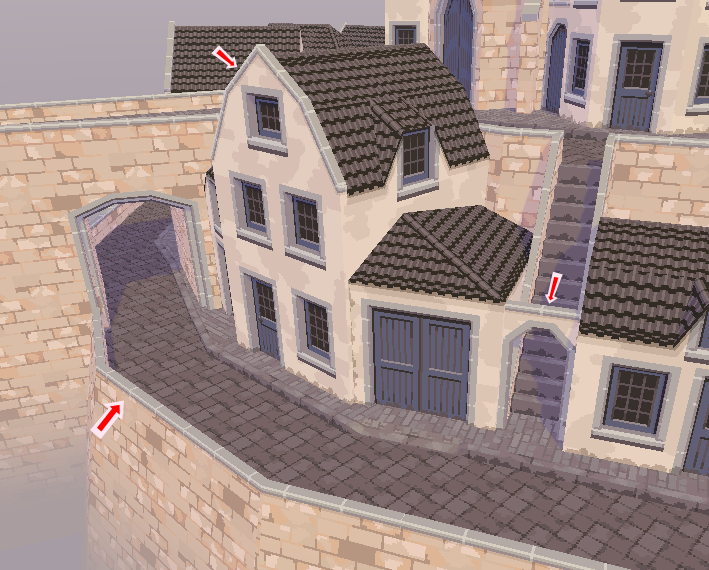

Coping: decorative stone edges
In architecture, decorative stone edges are called “coping”. They're easy to add and surprisingly versatile. You can use these to easily add tops to fences and facades. The church demo also uses coping for most of the stone decorations on the church.

We'll be making one surface and one trim: The surface will be the top of the coping, and the trim will be its sides.
Here's how you do it:
- Start by adding a 3D model:
- Block in something that will use the coping, like a brick fence.
- Create a new material for the coping. I simply called it “coping”.
- Use the material in the model, for example adding it to the top of the brick fence.
- Reimport your 3D model in Godot. You should see your changes already, although you'll get a warning about AutoTrimmer not recognizing your “coping” material (yet!)
- Make a tiling texture for the top surface of the coping. If you want the coping to have lines like in the screenshot, create a texture with a vertical line every so many pixels (in the screenshot it's every 24 pixels, although that can only really work if your texture is a multiple of 24 pixels wide).
- Create a Godot material that uses your new texture.
- Add the coping surface.
- In your rulebook, create a new surface for the coping.
- Set its name to the same name as you used for the material in the 3D model. If you don't give it exactly the same name, AutoTrimmer won't recognize it! Capitalization also has to match.
- Set “replace with material” to the Godot material you made in the previous step.
- Set “UV unwrap mode” to “unwrap along length”. This will align the texture to the sides of the surface, which is exactly what we want for the coping.
- Put the texture you made into “texture size source”.
- Check the option “may mirror texture to line up”. This will help align the surface with its trims.
- Reimport the model and see if the top of your coping is looking good.
- Draw a trim for the side of the coping on your trimsheet. If you gave the coping a line, don't forget to add lines to the trim at the same distance.
- Configure the trim.
- Create a new trim.
- Give it a name. I called it “coping_side”.
- Give it the right texture.
- Enable the option “may mirror texture to line up”.
- Optionally, configure the trim's whitelist. I don't think it's really necessary.
- Lastly we'll add the edge rule.
- Create a new edge rule.
- Set “add trim at neighbor” to the name of your “coping_side” trim.
- Paste in the condition below. In the code, replace the word “COPING” with
the UPPER_SNAKE_CASE name
of your coping surface.
self.surface == COPING and neighbor.surface != COPING and angle > 10 - Now reimport your model and see how it looks!